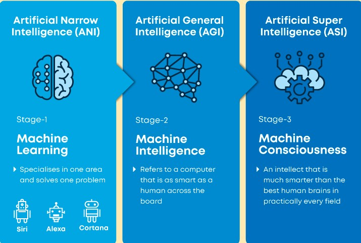

The Definition of Artificial Intelligence page
links
The Definition of Artificial Intelligence
(AI)refers to the simulation of human intelligence in computers programmed to think like human beings and to mimic their actions. The word can also refer to any computer that displays human mind-related characteristics such as learning and problem-solving.
Previous benchmarks that defined artificial intelligence become outdated as technology advances. For example, machines that calculate basic functions or recognize text by optimal recognition of character are no longer considered to embody artificial intelligence, as this function is now taken for granted as an inherent computer function.
The first thing that most people generally think about when they hear the word artificial intelligence is robots. This is because large-budget movies and novels weave tales about human-like machines this wreak havoc on Earth. There could be nothing further from the truth, however.
Artificial intelligence is based on the idea that human intelligence should be described in such a way that a computer can easily imitate it and perform tasks, from the simplest to the more complex. Artificial intelligence targets include comprehension, reasoning, and perception.
Previous benchmarks that defined artificial intelligence become outdated as technology advances. For example, machines that calculate basic functions or recognize text by optimal recognition of character are no longer considered to embody artificial intelligence, as this function is now taken for granted as an inherent computer function.
Types of Artificial Intelligence
